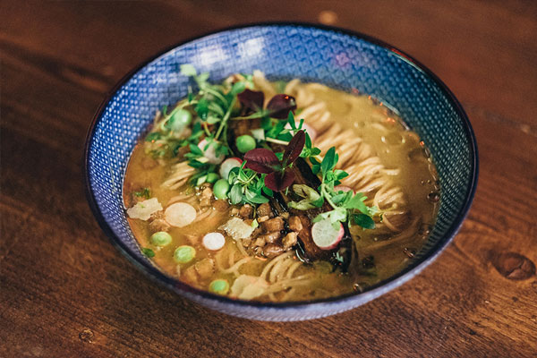

Bouillon clair de Sardine de Bretagne, Dashi de Niboshi, Assemblage de 3 Sojas importés du Japon, Filets de Sardines grillées, Chashu de Porc ibérique Pata Negra Cebo de Campo
| Nom | Image | Prix |
|---|---|---|
| Shoyu Ramen de Sardine 鰯の醬 |
 |
Prix : 15.00€ |